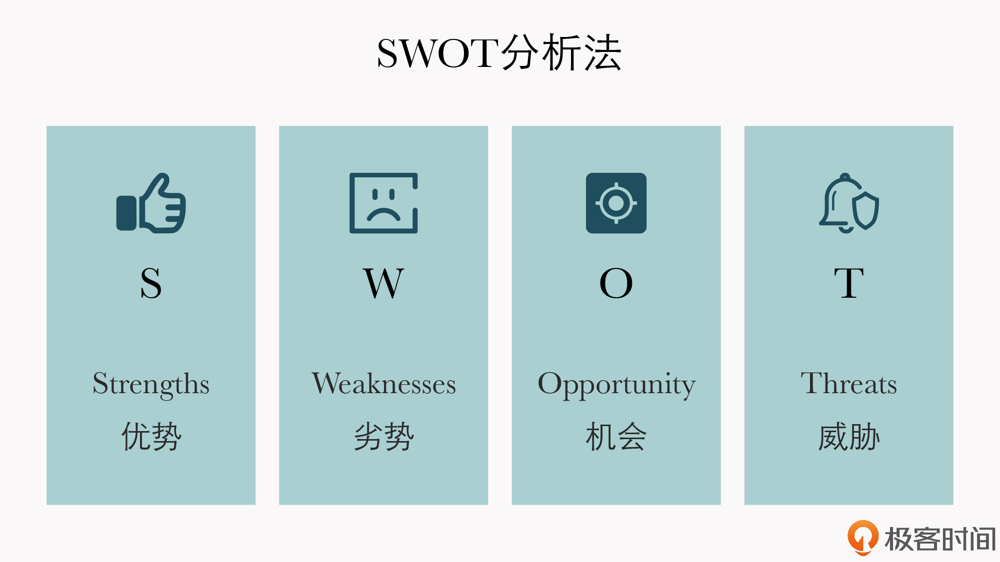

- 00 开篇词 短视频时代下，怎么把握好变现风口？.md.html
- 01 爆款短视频的底层逻辑：用心拍的短视频为啥没人看？.md.html
- 02 爆款短视频的底层逻辑：如何轻松打造自我特色？.md.html
- 03 精益创业法：如何快速跨过从0到1这道坎？.md.html
- 04 SWOT法：这么明显的个人优势你为啥就是看不到？.md.html
- 05 效用函数法：如何用量化的方式进行高效创作？.md.html
- 06 二次创新实验法：如何打造个人的差异化定位？.md.html
- 07 平台定位：如何选择最适合自己的创作平台？.md.html
- 08 如何快速找到各大短视频平台的正确切入点？.md.html
- 09 选题（上）：如何利用思考清单找到合适选题？.md.html
- 10 选题（下）：如何为不同的内容定制合适选题？.md.html
- 11 优劣分析法：如何快速筛选适合创作的视频素材？.md.html
- 12 标题（上）：如何利用微创新巧妙找到爆款标题？.md.html
- 13 标题（下）：如何用对号入座的方式抓住标题亮点？.md.html
- 14 视频封面（上）：如何快速抓住用户注意力？.md.html
- 15 视频封面（下）：如何传递最有价值的信息？.md.html
- 16 视频剪辑：如何轻松掌握视频化剪辑的三大公式？.md.html
- 17 效果反馈法：剪辑很容易，为什么你却一直学不会？.md.html
- 18 剪辑对比（上）：如何避开常见的短视频剪辑陷阱？.md.html
- 19 剪辑对比（下）：如何利用剪辑技巧提升视频质量？.md.html
- 20 拉片法：用电影创作的方式学习爆款短视频运营技巧.md.html
- 21 用户留存率：为什么粉丝很多但忠实拥趸却很少？.md.html
- 22 点赞率（上）：如何有效提升短视频的点赞量？.md.html
- 23 点赞率（下）：三种方法轻松提升用户对内容的认可度.md.html
- 24 上瘾机制：为什么视频观看量很高却没人留言？.md.html
- 25 避坑指南：为什么很多短视频账号中途做不下去了？.md.html
- 26 如何找到适合自己的短视频变现模式？.md.html
- 27 多元化变现：如何明确不同创作阶段的变现任务？.md.html
- 28 多内容变现：不同内容的主打变现模式是什么？.md.html
- 结束语 一切成大事者，都是终身学习者.md.html
- 捐赠
04 SWOT法：这么明显的个人优势你为啥就是看不到？
你好，我是周维。这节课，我们来学习如何采用SWOT法来发掘自己在内容创作中的优势。
为什么要发掘自己在内容创作中的个人优势？
我在接触很多刚入局短视频创作的同学时，发现他们在一开始做内容的时候，都持有一个错误的观点：不管自己创作的是什么主题、什么类型的内容，只要能受到用户的欢迎，能成为爆款，然后吸引到更多的粉丝、流量，才算是一个短视频创作大神。
事实上，这样的创作者也比比皆是，我在工作中认识的某个短视频博主就是典型代表。他看到什么热点火，就做什么内容，比如今天去点评热搜上的娱乐明星，明天去分析互联网热点事件，后天还会去创作各地的家常美食。总之，他为了创作爆款内容煞费苦心，最后的结果也确实不错，在半年的时间里他的粉丝涨到了四五十万。
但是，正当他摩拳擦掌，准备大展宏图的时候，账号被封了。平台给到的封号原因有两个：原创度不够，没有自己的观点；领域不够垂直，内容多是搬运之作，没有价值。
可见，这种单纯为了做爆款、做用户喜欢内容的创作方式是非常错误的，不管哪个短视频平台都不会支持。
因为，现在的短视频平台早已脱离了早期“野蛮生长”的发展状态，它们会更加重视创作者个体的价值，希望能通过发掘创作者的内容优势，减少平台内容上的同质化，达成构建多元化内容、多样性商业生态的发展目的。
所以作为创作者，我们要想能持续地打造热门视频内容，就需要抓住平台重视的关键点，也就是要找到自己显著的个人优势。
不过你可能要问了：自己有啥优点特长还能不知道？发掘个人优势是一件难事吗？
就拿我自己来说吧，虽然我不会唱歌跳舞，没有什么特色才艺，但从小感觉写作水平还可以，写的文章上过报纸，之前也还出过书，所以我觉得写作肯定是我的个人优势了。
可你回过头来想想，全世界又不是就我一个人会写，成名的作家有的是，即使是放在短视频领域，文案写得好的人也是数不胜数。那这样看，我这个写作优势就不算什么了。
所以可见，发掘个人优势没有这么简单，我们不能单凭个人主观来断定自己的优势是什么，而是要结合一定的判断标准。
具体是什么标准呢？这就是今天我们要学习的核心知识点：用SWOT法找到短视频内容创作中的个人优势。
根据SWOT法找到短视频创作的个人优势
SWOT法经常被拿来做竞品分析、产品优劣分析等等，估计你也很熟悉，这里我就大概讲讲它是怎么应用的。
简单来说，SWOT法就是列举事物自身的优劣势和外部环境的机会与威胁，然后结合四个关键的分析要素（Strengths/优势、Weaknesses/劣势、Opportunity/机会、Threats/威胁），进行相应的匹配分析，进而得到想要的结果。

SWOT法的分析方式是很客观、具体和准确的，而我们知道，要想找到短视频创作中的个人内容优势，就需要主观与客观相结合。
那么，我们要如何根据SWOT法来抓取自己的最大优势呢？
下面我就通过一个例子来给你具体介绍一下吧。
我的一个朋友小陈是产品经理，工作了十几年，能力优秀、经验丰富，他认为这是自己的个人优势，因此想做短视频来分享产品运营的相关知识点。但现实真的是这样的吗？我们不妨先用SWOT法来分析一下。
- 优势（S）：小陈在互联网公司工作多年，积累并沉淀了多款产品从0到1的打磨经验；在公司内部有多次做培训讲师的经历，语言表达能力不错。
- 劣势（W）：小陈从没有拍过短视频，与专业的创作者相比存在差距；虽然有相关的产品打磨经验，但他没有特别有名气的代表作。
- 机会（O）：短视频平台进入垂直深耕时代，对垂类知识分享的创作者需求量大增；各个平台的用户不仅有泛娱乐内容的需求，还有学习知识的需求。
- 威胁（T）：各个短视频平台上，制作同类型内容的专业账号不在少数。
由此我们就可以发现，即使小陈认为自己的工作经验和能力都很好，但他没有结合外界的客观情况进行综合的分析，这是不准确的。
根据我多年的从业经验，我认为要想准确找到个人在短视频创作中的最大优势，就需要将自我认为的优势放到具体环境下，结合外界客观存在的机遇、竞争关系、市场优劣势等多个维度，进行匹配分析，得到多种可能性，从中选取对自己当前发展最有利的可能，将其放大，以此作为自己创作内容的最大优势。
那么具体要如何进行匹配分析呢？我们可以把SWOT法中的四个关键要素两两组合起来。
下面我们就根据小陈的例子，来具体看看发掘个人优势的做法。
1. 发挥优势、避开劣势（SW）
第一种组合方式是发挥优势、避开劣势。这个做法的道理很简单，就是所谓的扬长避短，这也是早期做短视频时较为常用的一种定位创作内容的手段。
现在我们来分析下小陈的案例。
我们已经知道，小陈的最大优势是从事产品工作多年，而且经历了多个产品从0到1的打磨过程，也有讲课培训的经验，比较了解从事产品工作的小伙伴会遇到哪些难题。
所以，他可以先找准自己的目标用户定位，也就是那些刚刚踏入产品圈的小白用户，可以围绕他们的不同需求来创作内容，然后在这个过程中不断根据用户的反馈继续迭代。
而小陈的劣势是没有拍过短视频，以及没有特别有名气的代表作。所以为了避开没有拍过短视频的劣势，他可以邀请有短视频拍摄和运营经验的朋友加入，加快入局的步伐；或者小陈可以先去系统学习一下短视频创作的方法，避免自己走上创作的弯路。
对于没有特别有名气的代表作这个短板，小陈可以先利用自身的经验，在创作内容时，可以通过分析当下炙手可热的产品，作为内容创作的切入口，以此来吸引更多用户的关注。
2. 克服劣势、利用机会（WO）
第二种组合方式是克服劣势、利用机会。当外部提供的机会与自身的优势不匹配时，创作者就不容易充分发挥自己的强项，因此这个时候就要有针对性地改变或追加资源，加强自己的短板，逐渐把劣势转化成优势。
这种方式比较适用于很明白自己存在哪些不足的创作者，只要利用好短视频平台的发展机会为自己的创作助力，就可以在发现和解决问题的过程中得到持续地成长。
那么，对于小陈来说，如果想要克服自己在短视频拍摄和没有出名作品上的短板，小陈可以先借鉴、学习其他人的拍摄手法，利用平台所推出的官方活动或话题，进行“命题式”创作。
这样，平台已经规定好了视频内容的时长、样式以及分享的知识点，带上活动话题也会吸引很多对知识类内容有学习需求的用户，小陈在此过程中就可以快速学习到短视频的创作技能。
3. 回避威胁、减少劣势（TW）
第三种组合方式是回避威胁、减少劣势。
对短视频内容创作者来说，当自身的劣势与外界的威胁相遇时，只会百害而无一利。因此如果无法清晰地认知自己拥有什么优势的时候，也错过了外界的发展机会，那么就可以先选择回避威胁，弱化自己的缺点，通过深挖用户需求以突出自己内容的特色。
我们还是拿小陈为例。通过分析，小陈目前面临的外部威胁就是当下已经有不少专业制作同类内容的创作者，所以会存在竞争压力。
因此，要想回避这个威胁，小陈可以通过调研等方式，先去深挖一些用户的需求，比如说用户想在轻松娱乐的状态下了解一个产品知识，那么小陈就可以把“幽默搞笑”作为自己的内容特色。这样他的创作公式就可以是：ToC领域+小白一族+幽默搞笑+知识输出，这四个元素的组合，就形成了小陈内容的差异化，也就回避了目前存在的外界威胁。
而对于减少劣势，我们不是说小陈要完全克服它，不让自己存在劣势，而是可以不突出、不以此为重点。比如在前期的创作中，就不要以过硬的视频质量为卖点，而是以价值输出为核心；对于没有特别有名气的作品这一点，只要小陈不在内容中体现出来就可以了。
4. 发挥优势、利用机会（SO）
第四种组合方式是发挥优势、利用机会。
这种发掘个人优势的做法是四种组合方式中最优的，用自身的优势撬动外部的机遇，可以产生杠杆效应，让机遇与优势充分发挥出来，提高创作成功的概率。因此，如果你利用SWOT法分析出了四个结果，可以首选“优势+机会”这个选项。
所以这里我们可以为小陈提供两种创作方案，以最大化地发挥他的内容优势：
- 第一种，小陈可以直接以自身经历作为卖点，在内容输出的过程中打造个人IP。
- 第二种，小陈可以先分析出用户的学习需求，然后再结合自身的经历来创作短视频。比如，针对刚刚从事产品工作的小白用户，小陈可以专门输出类似“刚踏入产品圈的几大必备本领”等内容（如《从事五年产品工作的我，劝你不要做这五件事》），帮助小白用户明确容易踏入的误区，这样的内容一定会受到欢迎。
好了，以上就是用SWOT法找到个人内容优势的四种方式。我们在确定个人优势的时候，一定要记住一点，就是不能主观地判断自己的特长，而是要用科学的方法进行评估，并通过不同元素的组合找到内容创作的切入点。
小结
SWOT法可以帮我们全方位地分析个人优势在具体的环境下所面临的多种可能性，而利用SWOT法来确定个人优势的策略，就是要根据四个关键要素两两组合来识别。这节课我带你学习了四种发掘优势的组合方法，你可以重点记忆：
- 发挥优势、避开劣势（SW）
- 克服劣势、利用机会（WO）
- 回避威胁、减少劣势（TW）
- 发挥优势、利用机会（SO）
最后我还想说明一点，就是当我们去自我评估优劣势时，可能难免会陷入到主观臆断中。因此，我们也可以先自己评估出结果，再邀请5个以上的朋友来对自己做一个评估，根据他们的评估对之前的结果进行修正，最后得出的结果就会更加客观准确。

思考题
请你结合自己的内容创作领域，按照SWOT法分析一下自己最大的个人优势是什么？欢迎在留言区分享你的答案。
如果你觉得有收获，也欢迎把今天的内容分享给更多的朋友。
© 2019 - 2023 Liangliang Lee. Powered by gin and hexo-theme-book.